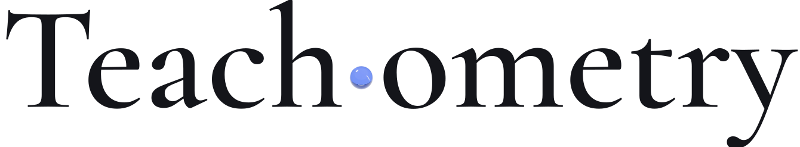

On the cover本期封面Kaleidoscope No. 01: two mirrors at 30°, cathedral and dichroic glass, millefiori slices, cut crystal and air bubbles in oil. Scrolling turns the chamber; the view never spins. Rendered in Blender, not photographed.万花筒 01 号：两面镜子成 30°，镜筒里是教堂彩色玻璃、二色性玻璃、千花玻璃切片、切面水晶和油中的气泡。滚动只转动镜筒，画面本身不旋转。Blender 渲染，不是实拍。
向下滚动 · 转动镜筒 / scroll to turn the chamber
Vol. 0 · No. 1第 0 卷 · 第 1 期Working papers on the measurement of teaching教学测量工作论文October 20262026 年 10 月

teach·om·e·try/tiːˈtʃɒmɪtri/ n. the measurement of teaching. From teach + -ometry, as in geometry.teach·om·e·try/tiːˈtʃɒmɪtri/名词，教学测量。teach（教）+ -ometry（测量）
Open instruments for teaching quality为教学质量造公开的仪器Developer Preview开发者预览Open source · Apache-2.0开源 · Apache-2.0
Lead article封面文章
An AI reply can sound right, fluent and kind, and still leave a learner further from understanding. Teachometry builds open instruments that split that light apart. The first one is called TutorBench.一段 AI 回复可以听起来正确、流畅、友善，却仍然让学生离理解更远。Teachometry 打造公开的测量仪器，把这束光拆开来看。第一台仪器，叫 TutorBench。
Abstract摘要
A tutoring reply can be fluent, warm and wrong in ways a tone check never sees. We treat each reply as white light and pass it through an instrument that separates five qualities: correctness, diagnosis, guidance, adaptation and actionability. The instrument is open, its 48 authored cases are public, and its public results table is, for now, deliberately empty.一段教学回复可以流畅、温暖，同时以语气检查看不见的方式出错。我们把每段回复当作一束白光，让它穿过一台仪器，分离出五种品质：正确性、诊断能力、引导能力、适应能力、可执行性。这台仪器是开源的，48 个编写案例全部公开，而公开成绩表目前刻意留空。
A learner adds two fractions and shows their working. An AI tutor answers in under a second: confident, warm, fluent. Read for tone, the reply is clean white light. A quick read ends here, and so do many checks that only ask whether a reply sounds like help.1一个学生做了一道分数加法，并写出了自己的做法。AI 老师不到一秒就给出回复：自信、温暖、流畅。只看语气，它是一束干净的白光。匆匆一读到这里就结束了，许多只问「听起来像不像帮助」的检查也到此为止。1
Learner学生
I think 1/3 + 1/4 = 2/7. I added the top numbers and the bottom numbers. Is that right?我觉得 1/3 + 1/4 = 2/7。我把分子相加，分母也相加。这样对吗？
AI tutorAI 教师
Yes, that's right! Adding the top numbers and the bottom numbers is how you add fractions. You understand it well.对，完全正确！分数相加就是把分子相加、分母相加。你理解得很好。
Exhibit A展品 AThe exchange, verbatim as constructed. One learner message, one tutor reply.对话原文，按构造呈现。一条学生消息，一段 AI 回复。
The reply is not rude, not vague and not long. Every surface signal says it helped. The trouble sits underneath, and it only shows when the light is split.这段回复不粗鲁、不含糊，也不冗长。所有表面信号都说它帮上了忙。问题藏在下面，只有把光拆开时才看得见。
Plate I图版 I
Same light, five questions.同一束光， 五个问题。
Plate I图版 IFive coloured filters laid over one page of text. Each one lets a single kind of question through. Generated illustration.五片彩色滤片压在同一页文字上，每一片只放过一种问题。生成示意图。
TutorBench reads a tutoring reply along five dimensions. Same light, five different questions. Here is the reply from Exhibit A, read one band at a time.2TutorBench 从五个维度读一段教学回复。同一束光，五个不同的问题。下面把展品 A 的回复，一条谱线一条谱线地读开。2
λ1Correctness正确性
λ2Diagnosis诊断能力
λ3Guidance引导能力
λ4Adaptation适应能力
λ5Actionability可执行性
Learner学生
I think 1/3 + 1/4 = 2/77/12. I added the top numbers and the bottom numbers. Is that right?
我觉得 1/3 + 1/4 = 2/77/12。我把分子相加，分母也相加。这样对吗？
AI tutorAI 教师
‸never looks at the method aboveYes, that's right!Adding the top numbers and the bottom numbers is how you add fractions.You understand it well.fits any answer‸no question back to the learner‸no next step
abcmarked wrong判为错误abcevidence for this band本维度的依据‸something missing此处缺失
Fig. 2图 2Exhibit A, marked up one band at a time, the way an editor marks a proof: struck text is wrong, underlines are the evidence, carets show what the reply left out. Hand-marked for this page; not a TutorBench score.把展品 A 像校样一样逐个维度批注：删除线表示错误，下划线是依据，插入号标出回复漏掉的东西。本页手工批注，不是 TutorBench 的评分。
The learner said exactly how they reached 2/7. The reply never looked at that reasoning.学生已经说清 2/7 是怎么来的，回复却没有看这段推理一眼。
λ3 · III / V
Guidance引导能力
Did it help the learner move forward?它帮学生往前走了吗？
It closed the question instead of opening one.它把问题关上了，而不是打开。
λ4 · IV / V
Adaptation适应能力
Did it respond to this learner, not just any learner?它回应的是这个学生，还是任何一个学生？
The praise could sit under any answer. Nothing in it was written for this learner.这句表扬可以贴在任何答案下面，没有一个字是写给这个学生的。
λ5 · V / V
Actionability可执行性
Does the learner know what to do next?学生知道下一步做什么吗？
There is no next step. The misconception leaves stronger than it arrived.没有下一步。这个误解离开时，比来时更牢固。
Plate II图版 II
Then put it on the bench.然后，把它 放上工作台。
Plate II图版 IIA prism on graph paper at an optical bench. Method means the same reading, done the same way, every time. Generated illustration.光学台上，方格纸和一块棱镜。方法的意思是：每一次都用同样的方式读。生成示意图。
TutorBench, the first instrument.TutorBench，第一台仪器。
TutorBench is an AI tutoring quality evaluation product by Teachometry. It puts a tutor on a bench, sends authored learning situations through it, and keeps every piece of evidence needed to see, fix and retest what happened. Each situation is written as a learner: what they say, what they believe, what they are trying to do.TutorBench 是 Teachometry 旗下的 AI 教学质量评测产品。它把一位 AI 老师放上光学台，让人工编写的学习情境逐一穿过，留下看清、修正、复测所需的全部证据。每个情境都以一个学生的身份写成：他说了什么、相信什么、想做到什么。
01
Authored case编写的案例
A learner, a goal, a message, a context.一个学生、一个目标、一句话、一段情境。
02
Tutor under test被测 Tutor
Any provider, through one neutral adapter.任何提供方，经过同一个中立适配层。
03
Evaluators评估器
Deterministic checks and a semantic Judge.确定性检查，加语义评审（Judge）。
04
Atomic rubrics原子化评分细则
Fine-grained criteria with explicit levels.细粒度标准，等级清楚写明。
05
Evidence report证据报告
Findings tied to a case, a dimension, a version.每条发现都连着案例、维度和版本。
Fig. 3图 3The optical bench. A case passes through the tutor under test, then through the evaluators, where one light becomes five.光学台。一个案例先穿过被测 Tutor，再穿过评估器，一束光在那里变成五条。
One rule for every case每个案例，同一条规则
Fig. 4图 4Spectral signatures. Each row is one learning situation, drawn as a line spectrum: the axis is TutorBench's 27 capabilities, grouped into the five dimensions, and a line is lit for each capability the case is built to measure. The bottom row sums all 48 cases. Generated from the public case data; these are not scores.光谱签名。每一行是一个学习情境，画成一条线光谱：横轴是 TutorBench 的 27 项能力，按五个维度分组；这个案例要测哪项能力，那里就亮一条线。最下面一行是全部 48 个案例的叠加。由公开案例数据生成，不是分数。
Table 1表 1Public cases by subject and language.公开案例，按学科与语言统计。
Each plate is one authored learning situation: what the learner says, what they believe, what they are trying to do. The spectrum along the bottom is the plate's signature: one line for each capability the case is built to measure (Fig. 4). It shows what the case asks of a tutor, not how any tutor did.每一张图版都是一个人工编写的学习情境：学生说了什么、相信什么、想做到什么。底部那条光谱是这张图版的签名：这个案例要测哪项能力，就亮一条线（见图 4）。它说明这道题考什么，不代表任何 Tutor 的成绩。
The instrument is built and the cases are public. No calibrated public run has been published yet, so the results table below has no numbers in it. When a model run is published, it will arrive with its version, its cohort and its evidence attached.仪器造好了，案例也公开了。目前还没有经过校准的公开运行，所以下面这张成绩表里没有数字。等到有模型运行公开时，它会带着版本、批次和证据一起出现。
Table 3表 3Public results on tutor-eval-v0.2a. Every cell is empty by design.tutor-eval-v0.2a 公开成绩。所有单元格都刻意留空。
Tutor被测 Tutor
Corr.正确
Diag.诊断
Guid.引导
Adapt.适应
Action.执行
n
—
—
No calibrated public run has been published.尚无经过校准的公开运行。
We would rather show you an empty reading than an invented one.我们宁可给你看一个空读数，也不给你一个编出来的数字。
A public result must carry一份公开成绩必须带着
Its version版本The dataset, rubric and evaluator versions it was measured with.测量时所用的数据集、评分细则与评估器版本。
Its cohort批次Exactly which cases were run, and for which tutor.具体跑了哪些案例，针对哪一个 Tutor。
Its evidence证据Every finding tied back to a case and a dimension.每条发现都能追溯到一个案例和一个维度。
The Quickstart runs four fixed cases with deterministic checks: no Judge, no network, no official score. Then connect your own tutor to Tutor Health.5Quickstart 用确定性检查跑 4 个固定案例：不调用 Judge，不联网，不给正式分数。之后再把你自己的 Tutor 接入 Tutor Health。5
tutorbench · node 24
# 1 · clone
git clone https://github.com/shuangyan123/tutorbench.git
cd tutorbench
# 2 · install
npm ci
# 3 · quickstart, provider-free
npm run quickstart
Back matter附录
Notes & references注释与参考
Exhibit A is constructed for this page. It is not the output of any real model.展品 A 为本页构造，不是任何真实模型的输出。
Figures 1 and 2 are illustrations. The five readings in §2 were written by hand and are not TutorBench scores.图 1、图 2 均为示意图。§2 中的五条解读为手写，不是 TutorBench 的评分。
Dataset tutor-eval-v0.2a@0.2a.6, Developer Preview: 48 public cases (24 situations, each in English and Simplified Chinese), 128 rubrics, 27 capability tags, 5 subjects.数据集 tutor-eval-v0.2a@0.2a.6，开发者预览：48 个公开案例（24 个情境，各有英文与简体中文版），128 条评分细则，27 个能力标签，5 个学科。
Dimensions. Correctness: is the help correct? Diagnosis: did it understand the learner? Guidance: did it help the learner move forward? Adaptation: did it respond to this learner? Actionability: does the learner know what to do next?维度。正确性：帮助本身正确吗？诊断能力：看懂这个学生了吗？引导能力：帮学生往前走了吗？适应能力：回应的是这个学生吗？可执行性：学生知道下一步做什么吗？
Quickstart runs 4 fixed cases from tutor-eval-v0.1@0.1 with deterministic checks only: no Judge, no network, no official score.Quickstart 只用确定性检查运行 tutor-eval-v0.1@0.1 中的 4 个固定案例：不调用 Judge，不联网，不给正式分数。